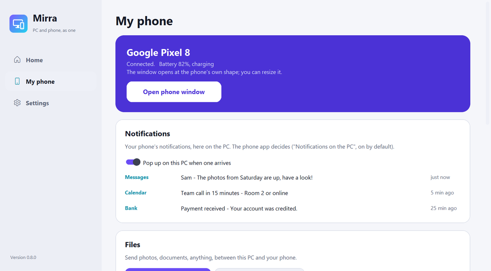
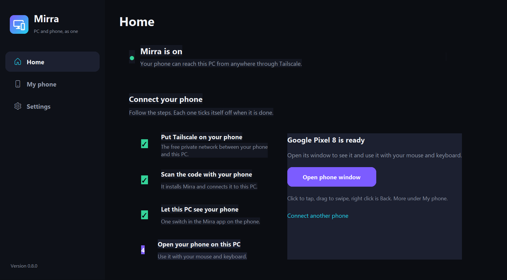
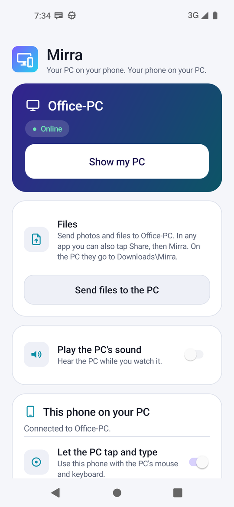
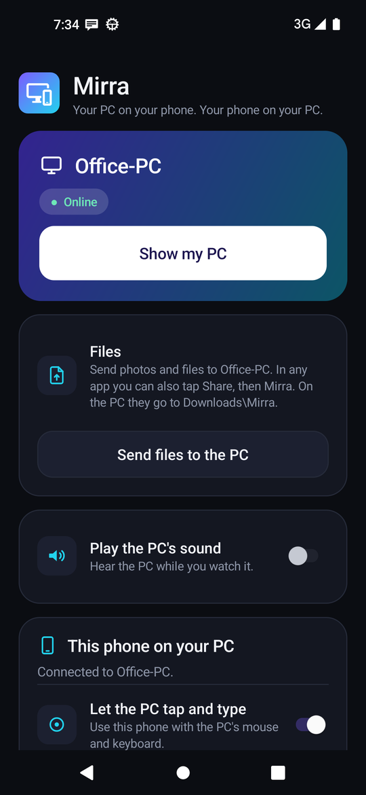

Mirra mirrors and controls your Android phone from your Windows PC, smooth up to 60 frames a second. It also shows your PC on your phone, sends files both ways and brings your phone's notifications to your PC. Private by design: no cloud, no ads, no account with us.
Windows 10 and 11 · Android 11 or newer · All downloads




One app on each side. Set up once in five minutes, then it just works, at home or anywhere else.
Your phone in its own window, sharp and smooth (up to 60 fps). The mouse is your finger, the keyboard types, Ctrl+V pastes.
Full screen, pinch to zoom, with the PC's sound if you like. View only, by design: nothing on the PC can be clicked from the phone.
Drop files on the phone window and they land in the phone's Downloads. On the phone, tap Share, then Mirra. Up to 1 GB each.
Messages, calendar, anything: they pop up on the PC as they arrive, with the phone's battery at a glance.
Everything goes straight between your own devices over Tailscale's encrypted WireGuard network. No relay, no account with us, no tracking.
Both apps follow your Windows and Android setting, or pick Light or Dark yourself. Pin the phone window on top while you work.
A pop-up says when a new version is out, on the PC and on the phone. One tap, checked with SHA-256 or Android's signature.
MIT license. No ads, no subscription, no limits. Read every line on GitHub.
Mirra walks you through it and ticks each step off by itself.
Run Mirra-for-Windows-Setup.exe. Mirra offers to install Tailscale (free) if you don't have it.
Install Tailscale on the phone, then point the camera at the QR code in Mirra. The phone installs Mirra and connects by itself.
In Mirra on the phone, switch on "This phone on your PC". Then click Open phone window on the PC.
Free for everyone. Windows 10 and 11, Android 11 or newer. An iPhone can watch the PC in Safari.
Two directions, one setup, nothing in the middle.
| Mirra | Typical mirroring tools | |
|---|---|---|
| Phone on the PC, with mouse and keyboard | Yes, up to 60 fps | Yes |
| PC on the phone | Yes, with sound | Usually a separate app |
| USB debugging / developer options | Not needed | Often needed |
| Works away from home | Yes, through Tailscale | Often same Wi-Fi or a cable |
| Files both ways, notifications on the PC | Yes | Varies |
| Your screens on someone's server | Never | Sometimes, for remote use |
| Price | Free, open source | Free to paid |
Anything else? Ask on GitHub.
Yes. Mirra is free and open source (MIT license), with no ads, no subscription and no account with us. It uses Tailscale's free plan for the private connection.
Install Mirra for Windows, install Tailscale on the PC and the phone, scan the QR code in Mirra with the phone's camera, then switch on "This phone on your PC" in the Mirra app and click Open phone window on the PC.
No. There is no developer mode, no ADB and no cable. Mirra connects over Tailscale, so it works on the same Wi-Fi and from anywhere else too.
No. The picture, sound, files and notifications go straight between your own devices through Tailscale's encrypted WireGuard network. Nobody else, including the Mirra project, can see them.
An iPhone can watch the PC in Safari. Showing and controlling a phone on the PC needs an Android phone (Android 11 or newer).
scrcpy is a great open-source tool that needs USB debugging (ADB) and mirrors the phone to the computer. Mirra needs no developer options, works from anywhere through Tailscale, and also shows your PC on your phone, sends files both ways and brings phone notifications to the PC.
Mirra is not code-signed (that costs money), so Windows warns about any new program from the internet. Click More info, then Run anyway. The source code is public, and every release file has a SHA-256 checksum.